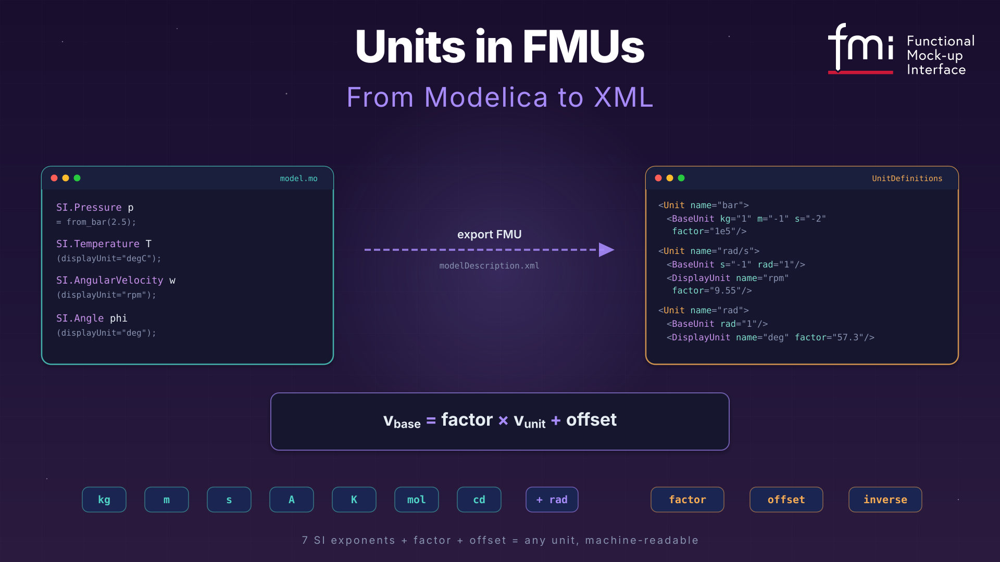

Units in FMUs — From Modelica to XML
(3/3) This one is the third of a series of three articles about SI units beyond SI. Part 1 was about units and quantities in Modelica. Part 2 was about Modelica unit conversions. Today: where those units go when they leave Modelica. 🧳

I hope you’ve got your preferred drink in hand ☕️🫖💧
Pop quiz: you export a Modelica model as an FMU. The model has a variable with displayUnit="bar". You open the FMU in a completely different tool — one that has never seen your Modelica code.
And yet… it shows the variable in bar. Not Pascal. Bar.
How? 🤔
There’s no magic. There’s no secret handshake between tools. There’s just a very well-designed XML structure inside every FMU, and today we’re going to read it like a book. (A short book. With lots of angle brackets.)
From Modelica to XML — the unit passport 🛂
When your Modelica tool exports a model as an FMU, it packs a modelDescription.xml file inside the ZIP archive. This file is the FMU’s passport — it tells the receiving tool everything about the model’s variables, including their units.
And units get their own section: <UnitDefinitions>.
Let’s see what happens to our friend SI.Pressure p = from_bar(2.5) when it leaves Modelica. In the XML, it becomes something like this:
<UnitDefinitions>
<Unit name="bar">
<BaseUnit kg="1" m="-1" s="-2" factor="1e5"/>
</Unit>
</UnitDefinitions>Wait — what are those kg="1" m="-1" s="-2" things? 🤔
Those are the seven SI base unit exponents (plus rad as a bonus eighth).
💡 Why rad? Radians aren’t actually an SI base unit — the SI system treats them as dimensionless (rad = 1). But FMI deliberately added
radas an eighth base unit for increased interpretability: it helps to handle the many quantities in technical systems that depend on an angle (angular velocity, angular acceleration, torque…). The catch? For dimensional analysis,radis still treated as1— so two equations withradin different places can still be dimensionally consistent. It’s a cosmetic layer that pays off when you’re staring at a list of 200 variables and trying to figure out which ones are angles. 😉
Every unit in FMI is decomposed into a product of powers of the base units: \[\text{bar} = \text{kg}^1 \cdot \text{m}^{-1} \cdot \text{s}^{-2} \times 10^5\]
The factor tells you how to convert from the named unit to the base unit. So if a variable has value 2.5 in unit “bar”, its value in the base unit (Pascal = kg·m⁻¹·s⁻²) is:
\[v_{\text{base}} = \text{factor} \times v_{\text{unit}} + \text{offset} = 10^5 \times 2.5 + 0 = 250\,000 \text{ Pa}\]
That formula — \(v_{\text{base}} = \text{factor} \times v_{\text{unit}} + \text{offset}\) — is the conversion formula in FMI. It covers every unit. Most of the time offset is zero and you’re just multiplying. The big exception? Temperature. (Surprise, surprise. 🙄)
For Fahrenheit:
factor = 5/9 ≈ 0.5556offset = 255.37 (= 273.15 − 32 × 5/9)
So 72°F → \(0.5556 \times 72 + 255.37 = 295.37\) K. ✅
Here’s the full SpringMassDamper example from the FMI 3.0 spec — this is what a real modelDescription.xml looks like:
<UnitDefinitions>
<Unit name="rad">
<BaseUnit rad="1"/>
<DisplayUnit name="deg" factor="57.2957795130823"/>
</Unit>
<Unit name="rad/s">
<BaseUnit s="-1" rad="1"/>
</Unit>
<Unit name="kg.m2">
<BaseUnit kg="1" m="2"/>
</Unit>
<Unit name="N.m">
<BaseUnit kg="1" m="2" s="-2"/>
</Unit>
</UnitDefinitions>Each <Unit> has a unique name and a <BaseUnit> that decomposes it into exponents. The exponents default to 0 if not listed — so <BaseUnit rad="1"/> means kg⁰·m⁰·s⁰·A⁰·K⁰·mol⁰·cd⁰·rad¹. Just… radians.
The <Unit> definitions are then referenced by <TypeDefinitions>, which link units to physical quantities:
<TypeDefinitions>
<Float64Type name="Modelica.Units.SI.Torque"
quantity="Torque" unit="N.m"/>
<Float64Type name="Modelica.Units.SI.Angle"
quantity="Angle" unit="rad"/>
</TypeDefinitions>Notice the quantity attribute? That’s the Modelica quantity string, carried over to FMI. We’ll come back to why this matters — and why it doesn’t matter enough — in a moment.
What the importer sees 🔍
So your FMU arrives at a new tool. The importer opens modelDescription.xml, reads the <UnitDefinitions>, and now it knows: “this variable is in bar, and bar means kg¹·m⁻¹·s⁻² with factor 1e5.” Great.
But here’s where it gets interesting.
DisplayUnit — the makeup survives the trip
Remember displayUnit from Part 1? The cosmetic layer? It travels too. Inside <Unit>, you can have <DisplayUnit> elements:
<Unit name="rad/s">
<BaseUnit s="-1" rad="1"/>
<DisplayUnit name="deg/s" factor="57.29577951308232"/>
<DisplayUnit name="rev/min" factor="9.549296585513721"/>
</Unit>The factor here converts from the unit (rad/s) to the display unit (deg/s):
\[v_{\text{display}} = \text{factor} \times v_{\text{unit}} + \text{offset}\]
So 10 rad/s → \(57.296 \times 10 = 572.96\) deg/s. The importer can offer “deg/s” or “rev/min” in its plot dropdown, and it knows exactly how to convert. 💅
That’s the answer to our pop quiz. No magic — just well-defined math.
The inverse trick — because fuel economy is weird 🤯
Most DisplayUnits are straightforward multiplications. But then there’s mpg (miles per gallon).
Fuel consumption is naturally expressed as L/100km in Europe — “how much fuel per distance.” But Americans think in mpg — “how much distance per fuel.” That’s an inverse relationship. More mpg = less consumption. The FMI spec handles this with the inverse attribute:
<Unit name="L/100km">
<BaseUnit m="2" factor="1e-8"/>
<DisplayUnit name="mpg" inverse="true" factor="235.214583"/>
</Unit>When inverse="true", the formula flips:
\[v_{\text{display}} = \text{factor} \times \frac{1}{v_{\text{unit}}}\]
So if fuel consumption is \(6 \times 10^{-8}\) m² (yes, that’s what L/100km reduces to in SI — don’t ask 😅), then:
\[\text{mpg} = 235.214583 \times \frac{1}{6 \times 10^{-8}} \approx 39.2\]
Our EU dashboard’s 6.0 L/100km becomes 39.2 mpg on the US dashboard. Same physical quantity, inverse display. The inverse attribute is the only reason this works without custom code.
(Fun fact from the spec: inverse="true" is only allowed when offset = 0. No one has found a use case for combining both, and honestly, let’s keep it that way. 🙃)
Cross-FMU unit checking — the real payoff 🎯
Here’s where <BaseUnit> exponents earn their keep.
Imagine you connect an output of FMU_A to an input of FMU_B. FMU_A’s output has <BaseUnit kg="1" m="2" s="-2"/> (that’s N.m — torque). FMU_B’s input has <BaseUnit kg="1" m="-1" s="-2"/> (that’s Pa — pressure).
A smart importer looks at the exponents: m=2 vs m=-1. Those don’t match. 🛑 Connection rejected. You just tried to plug a torque into a pressure port. The tool caught it before you wasted an hour debugging why your results looked like modern art.
And if the exponents do match but the factor or offset differ? Say one side uses “bar” (factor=1e5) and the other uses “Pa” (factor=1). The importer can auto-convert using:
\[\text{factor}(v_1) \times v_1 + \text{offset}(v_1) = \text{factor}(v_2) \times v_2 + \text{offset}(v_2)\]
Bar and Pascal have the same exponents. The importer can either convert automatically or flag a warning. Either way, the BaseUnit exponents made it possible.
This is the entire point of decomposing units into SI exponents. Not readability — machine-checkable physical consistency. In FMI 1.0, units were just strings. “N.m” in one FMU and “N*m” in another? The tool had to reject the connection because the strings didn’t match. With BaseUnit exponents, the tool knows they’re the same.
The fine print ⚠️
Two things to be aware of before you rely on all of the above.
Torque vs Energy. Open the FMI spec’s unit table. Torque (N.m) and Energy (J) have identical <BaseUnit> exponents: kg¹·m²·s⁻². Same factor, same offset. An exponent check can’t tell them apart. The quantity attribute ("Torque" vs "Energy") could help — but quantity names are not standardized in FMI. One tool might write "Torque", another "MomentOfForce". Same story for angular velocity vs frequency. It’s a known gap, not a bug — the spec explicitly says quantity names need standardization for this to work.
Tools that don’t check. The FMI spec says <UnitDefinitions> are optional and a tool “may also completely ignore the Unit definitions.” So your beautifully annotated FMU might land in a tool that treats units as decoration. What can you do? Always define units anyway (tools that do check will catch your mistakes), use meaningful variable names, and when crossing tool boundaries — verify a few values by hand. Yes, by hand. 😅
📖 Want to go deeper? The FMI 3.0 Implementers’ Guide — Section 4.1: Support for Physical Units covers unit checking, dimensional analysis, and unit propagation in detail — written for tool vendors, but very readable if you want to understand what a good importer is supposed to do with all that XML.
The END for today
Seven exponents. One formula. That’s the FMI unit system.
Combined with Part 1’s conversion cookbook, you now have the full picture — from from_bar(2.5) in Modelica to <BaseUnit kg="1" m="-1" s="-2" factor="1e5"/> in XML. Not bad for two coffee breaks. ☕️
Break is over, go back to what you were doing.
Clem
Next ->
© 2025-2026 Clément Coïc — Licensed under creative commons 4.0. Non-commercial use only.